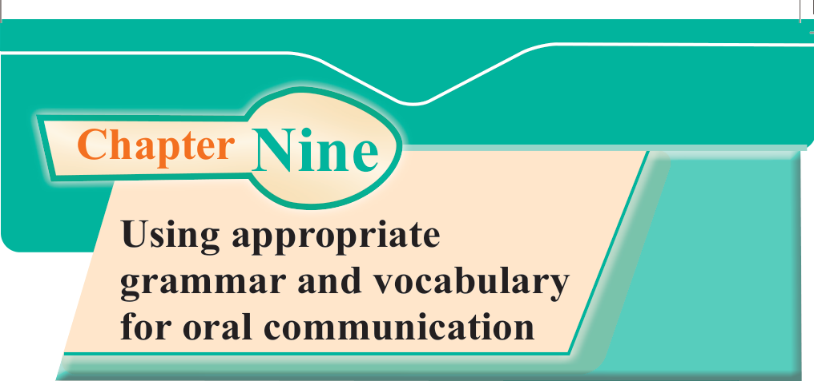
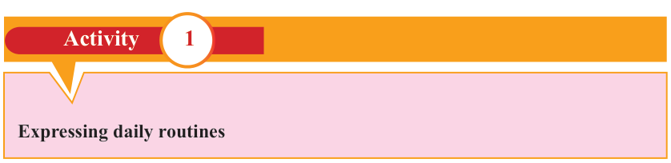

English for Secondary Schools Student’s Book Form One, printed page 139

Chapter Nine
Using appropriate grammar and vocabulary for oral communication
Introduction
Using appropriate grammar and vocabulary enables one to communicate clearly. In this chapter, you will learn to express daily routines and ongoing activities. You will also learn to express family relationships and occupations. Thereafter, you will learn to express ownership/ possession and give directions. The competencies developed will enable you to become confident in communicating and understanding thoughts and ideas orally and in writing.
Think about
1. the difficulties you face in making English sentences.
2. the efforts you make to compose correct sentences in English.

Activity 1: Expressing daily routinesActivity 1
Expressing daily routines